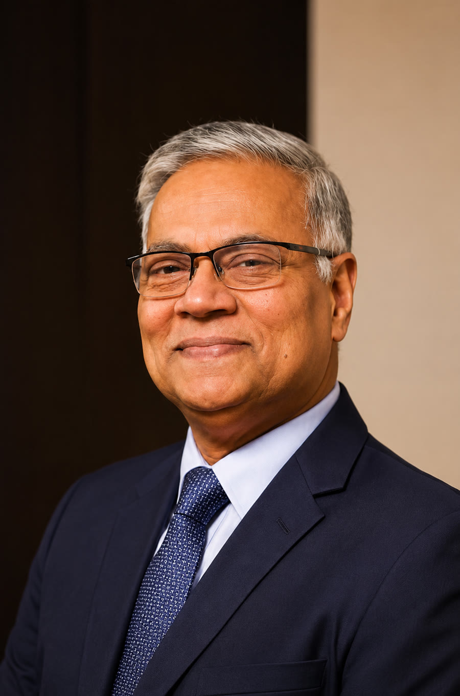
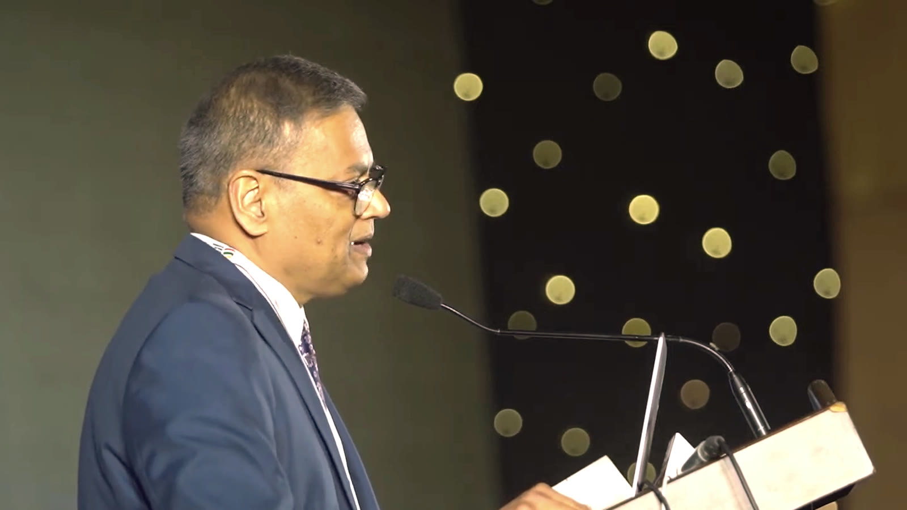
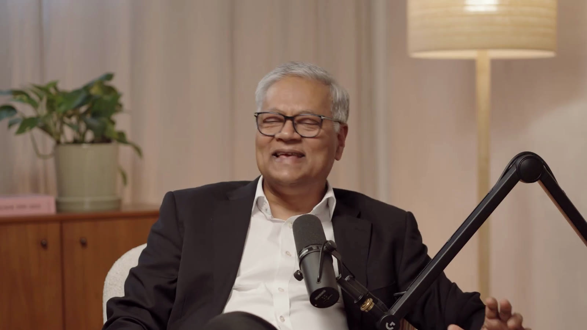

- Home
- Biography
Mr Md Zaker Ullah
Consultant Oncoplastic Breast and General Surgeon, and Clinical Lead of the Breast Unit at Whipps Cross University Hospital.

From his first day in medicine in 1987 to leading a breast unit in east London, one idea runs through his work: plan the cancer treatment and the result together, and take the time to explain both.
- 1987
Qualifies in medicine
MBBS. The beginning of a career in surgery that now spans nearly four decades.
- 1993
To London
He begins surgical training in the United Kingdom on the North East Thames rotation, working through London teaching and district general hospitals.
- 1996
Fellow of the Royal College of Surgeons of Edinburgh
FRCSEd, the fellowship that marks a fully trained surgeon in the British tradition, and the reason he is addressed as Mr rather than Dr.
- 2003
A European prize
His keyhole hernia repair technique, using a glove balloon, wins best video presentation at the European Association for Endoscopic Surgery.
- 2009
Specialist in general surgery
FRCS in General Surgery, after higher training at The Royal Marsden, Europe’s largest specialist cancer centre, and at St Mary’s, The Royal Free and Broomfield. It is here that his interest in oncoplastic breast surgery takes shape.
- 2012
Consultant, Barts Health
Appointed consultant oncoplastic breast and general surgeon at Whipps Cross University Hospital, part of Barts Health NHS Trust.
- Today
Leading the breast unit
Clinical Lead of the Whipps Cross Breast Unit, where he introduced the one-stop breast clinic and fat grafting for breast reconstruction. He directs the Whipps Cross Higher Surgery FRCS course and sees private patients at The Holly, Harley Street and St Bartholomew’s.

He speaks at international cancer meetings, and is a trustee of Planetary Health Academia, a consortium of doctors of Bangladeshi heritage.
His practice today
The full range of modern breast surgery, with one surgeon from first appointment to follow-up.
Breast cancer surgery
Breast conserving surgery and therapeutic mammoplasty, mastectomy and lymph node surgery.
Reconstruction
Implants, latissimus dorsi, chest wall perforator and Grisotti flaps, fat grafting and nipple reconstruction.
Risk reducing surgery
For carriers of BRCA and other gene variants, planned around the patient and her family.
Symmetry
Reduction and uplift to balance the breasts after cancer surgery.
General surgery
A laparoscopic practice in gallstone disease, hernia repair and appendicectomy.
Teaching the next surgeons
Directs the Whipps Cross Higher Surgery FRCS course, preparing senior trainees for the fellowship examination of the Royal Colleges of Surgeons.
Clinical and educational supervisor to surgeons in training, and a regular speaker to local GPs.
Published on oncoplastic reconstruction, laparoscopic hernia repair, breast cancer in Asian populations and diagnostic laparoscopy.

In conversation
In October 2026 he joined Rosie Fawehimi, whose breast cancer he diagnosed and treated, on her podcast Everything Changed to answer the questions patients ask most.
- Fellowships
- Royal College of Surgeons of Edinburgh (FRCSEd). FRCS in General Surgery.
- Associations
- Association of Breast Surgery. Association of Surgeons of Great Britain and Ireland. European Association for Endoscopic Surgery.
- Register
- General Medical Council, no. 4368515, on the Specialist Register.
- NHS
- Consultant, Barts Health NHS Trust, since 2012.
About Mr Ullah
Why is Mr Ullah called Mr and not Dr?
In British surgical tradition, doctors who gain the fellowship of a Royal College of Surgeons are addressed as Mr, Miss, Ms or Mrs rather than Dr. The title marks the completion of advanced surgical training.
Does Mr Ullah treat NHS patients?
Yes. He leads the NHS breast unit at Whipps Cross University Hospital, part of Barts Health NHS Trust. NHS referrals are made through your GP in the usual way. This website describes his private practice.
Does Mr Ullah speak Bengali?
Yes. Mr Ullah consults in English and Bengali, and many patients and families value discussing a diagnosis in their first language.
Can I see Mr Ullah for a second opinion?
Yes. Many patients see him for a second opinion on a diagnosis or a proposed operation. More about second opinions.
Let’s get you a clear answer
Most breast symptoms turn out to be nothing serious. A single appointment is usually all it takes to know for sure. Insured and self-funding patients are welcome at all three clinics.